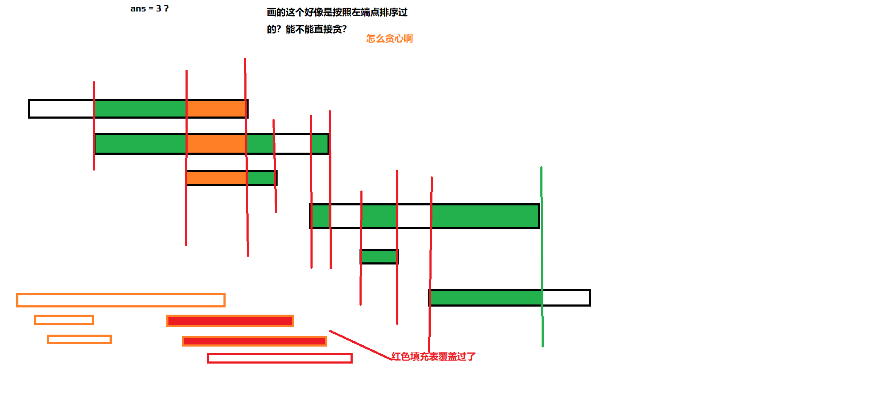

贪心
概述ψ(｀∇´)ψ
贪心，主要的思想就是“只看眼前的最优利益”。
个人认为贪心算法的重点就在于猜。
就是要先去大胆猜测“局部最优能推广到全局最优”，然后去找出“局部最优”。
然后利用下面提到的方式去证明/证伪。
范围缩放法ψ(｀∇´)ψ
一般需要证明任何对于局部“最优”决策的作用范围的扩展不会影响全局最优解（不造成整体结果变差）。
常用于一些决策具有前后关联的问题当中（这种要特别小心，容易和 DP 搞混淆。）
例题：POJ3614 Sunscreen
To avoid unsightly burns while tanning, each of the C (1 ≤ C ≤ 2500) cows must cover her hide with sunscreen when they're at the beach. Cow i has a minimum and maximum SPF rating (1 ≤ minSPFi ≤ 1,000; minSPFi ≤ maxSPFi ≤ 1,000) that will work. If the SPF rating is too low, the cow suffers sunburn; if the SPF rating is too high, the cow doesn't tan at all........
The cows have a picnic basket with L (1 ≤ L ≤ 2500) bottles of sunscreen lotion, each bottle i with an SPF rating SPFi (1 ≤ SPFi ≤ 1,000). Lotion bottle i can cover coveri cows with lotion. A cow may lotion from only one bottle.
What is the maximum number of cows that can protect themselves while tanning given the available lotions?
题解
我们考虑这样一个想法：前面的牛涂防晒霜的时候，要尽量让后面能更多的涂，这样答案才能更优。
所以可以考虑进行排序，一个比较 naive 的想法是，按照 \(\text{minSPF}\) 升序排序，然后每次尽量选能用的防晒霜里面最小的一个。
这样看起来可以让后面的有更多选择，但是能严谨证明吗？
我们发现一个点的决策会影响到之后的决策，所以我们考虑使用范围放缩法证明这个结论。
也就是去证明按照这种方式排序之后，每次选取能用的里面最小的一个，不会让后面的结果变差。
考虑当前为第 \(i\) 头牛，对于它能使用的任意两种防晒霜 \(x,y\)，假设 \(\text{SPF}(x) < \text{SPF}(y)\)。
那么我们就要去选择 \(x\)，看一下对于后面会不会有什么影响，显然，对于后面的牛，有：
- \(x,y\) 都没法适合
- \(x,y\) 都能适合
- \(x\) 适合而 \(y\) 不适合
- \(y\) 适合而 \(x\) 不适合
这四种情况，第一种和第二种情况下，不管我们是选 \(x\) 还是选 \(y\) ，结果都不会变差，可以不用管。
第四种情况下，我们选了 \(x\)，对后面也不会有影响，唯一会造成影响的就是第三种情况，其它三者都有比较显然的例子能证明他们会出现，现在考虑第三种情况会不会出现 ，好判断这个贪心方式是否正确。
现在 \(\text{minSPF}\) 的单调性已经确定了，假设 \(\text{maxSPF}\) 也单调递增的话，那么第三种情况就不存在，所以看起来这个贪心是对的。
但是问题就在于，\(\text{maxSPF}\) 不一定单调递增啊！有可能突然“缩回来”了。
比如这样：
1 2 3 4 5 6 7 | |
然后你就发现，第三种情况是存在的，所以这种贪心不是最优的，因为这样的决策会导致后面的全局答案变差。
有没有更优秀的贪心方式？显然一直选最小的能选的防晒霜，在 \(\text{minSPF}\) 或者 \(\text{maxSPF}\) 升序排序的时候的大方向一定是对的。
这里排 \(\text{minSPF}\) 不行，为啥不排 \(\text{maxSPF}\) 呢？所以现在考虑，按照 \(\text{maxSPF}\) 升序排序，每次考虑选适合的防晒霜里面 \(\text{SPF}\) 最小的。
仿照上面的方式，考虑每一个点任意的两种决策 \(x,y\)。发现第一种情况，第二种情况仍旧不用管。
第四种情况也可能出现，不过也不用担心，然后第三种情况就不会出现了，我们可以拿上面的反例来举个例子。
1 2 3 4 5 6 7 | |
用范围缩放法，可以知道第二种贪心的正确性。
当然，如果考虑选大的，那就是 \(\text{minSPF}\) 降序排序，道理一样，不过就是排列一下 \(\text{min/maxSPF}\) 和 \(\text{SPF}\) 的排列方式而已。
实现
1 2 3 4 5 6 7 8 9 10 11 12 13 14 15 16 17 18 19 20 21 22 23 24 25 26 27 28 29 30 31 32 33 34 35 36 37 38 39 40 41 42 43 44 45 46 47 48 49 50 51 52 53 54 55 56 57 | |
例题：POJ3190 Stall Reservations
Oh those picky N (1 <= N <= 50,000) cows! They are so picky that each one will only be milked over some precise time interval A..B (1 <= A <= B <= 1,000,000), which includes both times A and B. Obviously, FJ must create a reservation system to determine which stall each cow can be assigned for her milking time. Of course, no cow will share such a private moment with other cows.
Help FJ by determining: The minimum number of stalls required in the barn so that each cow can have her private milking period An assignment of cows to these stalls over time Many answers are correct for each test dataset; a program will grade your answer.
题解
这题本质上就是给你若干个区间，要你把它们分成若干个组，保证每一个组里面区间不相交，求最小的区间数，构造方案。
和 CSPS2021T1 极度类似，我当时在场上想了无数做法，很可惜贪心没学好，寄掉了，现在真的是悔死了。
不难想到一个暴力：直接维护当前畜栏的个数 \(tot\)，并维护每一个畜栏当前放进去的牛的结束时间。
然后考虑对于牛，按照开始时间升序排序，每次如果当前有畜栏可用，就放进去，否则新建一个畜栏。
然后用 std::priority_queue 可以直接维护到当前最早结束的一个，把牛尝试往这个里面放，时间复杂度 \(O(n\log n)\)。
这是一个比较经典的贪心，思考出来应该不难，考虑如何证明这个贪心。
其实就是，因为你排过序了，所以结束的早的能尽量早的放一头牛进去，这样可以避免浪费时间，对后面不会造成任何影响。
有一个感觉是反例的东西：万一排序过后前一个是 [3, 6]，后一个是 [3,5] 怎么办？
呃，直接把结束时间也计入关键字就完事儿了，这样做就能尽量节省时间，提升效率。
实现
1 2 3 4 5 6 7 8 9 10 11 12 13 14 15 16 17 18 19 20 21 22 23 24 25 26 27 28 29 30 31 32 33 34 35 36 37 38 39 40 41 42 43 44 45 46 47 48 49 50 51 52 53 54 55 56 57 58 59 60 61 62 63 64 65 66 67 68 69 | |
决策包容性ψ(｀∇´)ψ
一般是证明在任意的局面下，做出局部最优决策之后，这个决策在问题状态空间里的可达集合包含了所有这一步做出其它任意决策的可达集合。
也就是这个局部最优决策提供的可能性包含了其它所有策略的可能性。
例题：POJ1328 Radar Installation
Assume the coasting is an infinite straight line. Land is in one side of coasting, sea in the other. Each small island is a point locating in the sea side. And any radar installation, locating on the coasting, can only cover d distance, so an island in the sea can be covered by a radius installation, if the distance between them is at most d.
We use Cartesian coordinate system, defining the coasting is the x-axis. The sea side is above x-axis, and the land side below. Given the position of each island in the sea, and given the distance of the coverage of the radar installation, your task is to write a program to find the minimal number of radar installations to cover all the islands. Note that the position of an island is represented by its x-y coordinates.
题解
先用勾股定理把每个 Building 处理一下，也就是处理一下 \(x\) 轴上的哪一个区间可以覆盖它。
问题可以转化为，给定 \(n\) 个区间，用最少的点，使得每个区间都有一个点。
考虑一个贪心：按照区间左端点 \(l\) 升序排序，维护当前最后一个放的点的坐标 \(p\)。
如果当前扫到的区间不能被这个点控制到，也就是 \(l > p\)，那么新放一个点在 \(r\)。
否则让 \(p = \min(p, r)\)，也就是直接让当前区间被上一个管辖。
最后输出新放的数量即可（初始 \(p = -\infty\)）。
证明：
对于每一个区间 \([l_i,r_i]\)，有两种选择：1. 被之前放的点控制。2. 新建一个点控制它。
上面的贪心策略是，如果能 \(1\) 就使用 \(1\)，这样之后随便在哪里放都行，因为 \(i\) 和它以前的都有点控制了。
否则使用 \(2\)，这样需要在 \([l_i, r_i]\) 上放点，可以发现 \(1\) 能到达的决策集合包括了 \(2\) 的。
因为 1 的时候，下一个可以任意放。
然后如果选择 1，把上一个点放到 \(min(r_i,p)\) 的位置，就是尽量往后放。
这个“尽量往后放”的策略显然包含了“放在更前面的位置” 未来会到达的状态。。
之前已经排过序了，所以调整是不会影响前面的决策的，这个贪心就是正确的。
因为这个贪心的决策在问题状态空间里的可达集合包含了所有这一步做出其它任意决策的可达集合。
我的思路
处理出一些区间，
用勾股定理算一下。
然后问题转化为：求最少用多少个点，使得每个区间至少包含一个点。
感觉有点类似之前 CF 上一堆圆，包含，相切，相离的某个树形DP题。
不过道理不一致，这一题区间可以相交，CF那题不行，（我还交过翻译）
画了一个图，刚好是按照左端点排过序的。
考虑能不能贪心。
先看看数据范围，是不是 \(n \log n\) 堆，或者 on 单调栈/队列 之类的。
\(1e3\), \(n^2\) 可以过。
考虑 \(n^2\) 吧。
怎么贪心啊。
是不是要考虑一下局部最优策略是啥，然后直接尝试证明正确性？
局部最优应该就是考虑选能覆盖到区间尽量多的位置？
比如我考虑维护当前对于谁进行操作（就是记录一下哪一些已经被放过了）
然后在这个区间的所有对应策略里选择能覆盖区间最多的一个？
再把对应的选择覆盖到的区间全部标记？
然后对于每个区间都扫一次就是 \(O(n)\) 了，然后每个区间贪心做决定的时候就是 \(O(n)\)。复杂 \(n^2\) 可以过。
尝试证明正确性？之前的贪心都没自己证明过来着。
这个问题应该属于决策会影响后面的？考虑用扩展法证明？
等下，这个最多，是不是要考虑排除一种情况？图例里面 “红色填充表覆盖过了” 那一块。

==== 如果我选择前面的决策，看起来能覆盖三个，但是后面又有四个的，按照这种想法应该是选后面，
但是后面的肯定现在不会更新啊（因为我排了序），而且如果我局部就是这样，你前后最终都是要选的。
所以没有影响，最多这个操作就没问题。
====
回到证明，欸
感觉上面这个想法已经很对了，就是突然想到这个最多应该是怎样最多。
因为你迟早都要选的啊，你还不如尽量多搞一点。
呃，所以思路就这样了，看看对不对吧。
和 lyd 想法不太一致？？
但我觉得我的思路本质上和他的相同，只不过他的更好实现一点。
我的想法里面那个 "因为你迟早都要选的啊，你还不如尽量多搞一点"
就等同于 lyd 做法里面的尽量使用 "1"。
实现
1 2 3 4 5 6 7 8 9 10 11 12 13 14 15 16 17 18 19 20 21 22 23 24 25 26 27 28 29 30 31 32 33 34 35 36 37 38 39 40 41 42 43 44 45 46 47 48 49 50 51 52 53 54 | |
Exchange Argumentψ(｀∇´)ψ
可以用来证明某个贪心算法是否是最优的，或者说推导出一个最优的贪心算法应当以何种策略贪心。
一般是要求你在一个操作序列上找到一个最优的操作顺序（不同的位置，选择顺序不同时的代价不相同）。
思路通常都是拿某两个相邻的项出来，然后考虑如何判定他们的选取顺序是不是最优的。
比如我有一个算法 \(\mathcal{O}\)，它对于 \(i, i + 1\) 这两项的选择顺序就是 \(i \to i + 1\)。
然后现在需要证明或者证伪这个 \(\mathcal{O}\) 是最优的。
显然还有一种可能 \(\mathcal{A}\)，选取的顺序是 \(i + 1 \to i\)，我们就需要比较 \(\mathcal{O, A}\) 的操作代价。
假设 \(\mathcal{O}\) 是最优的，那么这个不等式就需要成立：
其中 \(\texttt{cost}_{x}\) 表示 \(x\) 这个元素的权值，\(\texttt{order}_{1,2}\) 表示先（后）选取所乘上的代价因子。
如果把分别关于 \(\texttt{cost}\) 和关于 \(\texttt{order}\) 的两个不等关系代入上面的不等式，得到了矛盾的结果，说明 \(\mathcal{O}\) 并不是最优的算法，\(\mathcal{A}\) 才是，反之则证明 \(\mathcal{O}\) 才是最优的算法。
清楚了谁是最优的之后，我们把这个不等式稍微改写一下，尽可能消去 \(\texttt{order}\)，得到一个关于 \(\texttt{cost}\) 的不等式，且将关于 \(i\) 的变量放在不等号一端，关于 \(i + 1\) 的放在另一端，这个就是最优算法的贪心（排序）策略（因为我们要求的就是最优的顺序（未知量），所以需要尽量消去贪心策略里关于顺序的变量）。
当然实际应用的时候 \(\texttt{cost}\) 可能需要用更复杂一点的方式计算，不过都是一样的。
但有一定可能是搞不出来的（所以得具体问题具体分析/oh
很多时候思考“安排顺序”类的问题都可以考虑一下 Exchange Argument。
一个比较基本的应用就是排序不等式：
排序不等式
若有序列 \(f\)，满足 \(0 \le f_1 \le f_2 \le f_3 \le \dots \le f_n\)。
并有学列 \(g\)，满足 \(0\le g_1\le g_2 \le g_3 \le \dots \le g_n\)。
设代价函数 \(c(f,g) = \sum (f_i\times g_j)\)，其中 \((i,j)\) 表示一组选择。
即是，从 \(g\) 中分别给每一个 \(f_i\) 分配某一个 \(g_j\)。
则得到的最大价值必然是：
得到的最小价值是：
Proof
设 \(f_i < f_j,g_i < g_j,i < j\)。
则：
\(\therefore (f_ig_i +f_jg_j) > (f_ig_j+f_jg_i)\)
归纳后可证明排序不等式。
先看一个序列上的 Exc Arg：
例题：NOIP2012TG 国王游戏
恰逢 H 国国庆，国王邀请 \(n\) 位大臣来玩一个有奖游戏。首先，他让每个大臣在左、右手上面分别写下一个整数，国王自己也在左、右手上各写一个整数。然后，让这 \(n\) 位大臣排成一排，国王站在队伍的最前面。排好队后，所有的大臣都会获得国王奖赏的若干金币，每位大臣获得的金币数分别是：排在该大臣前面的所有人的左手上的数的乘积除以他自己右手上的数，然后向下取整得到的结果。
国王不希望某一个大臣获得特别多的奖赏，所以他想请你帮他重新安排一下队伍的顺序，使得获得奖赏最多的大臣，所获奖赏尽可能的少。注意，国王的位置始终在队伍的最前面。
题解
使用 Exchange Argument。
我们假设已经有一些大臣和国王一起站在前面，且已经是最优决策，假设现在有两个人候选，我们要通过算法 \(\mathcal{A}\) 安排他们在队尾的位置。
\(\mathcal{O}\) 则是一个最优算法，并且 \(\mathcal{O}\) 和 \(\mathcal{A}\) 唯一的区别就是对于这两个人的排序，之前的（处理现在已经排好了的人的方式）都一模一样。
第一个人用 \((a_1, b_1)\) 表示（左右手上的数），第二个人用 \((a_2, b_2)\) 表示。
不难发现可选的算法只有 \(\mathcal{A}: \{1, 2\}\) 和 \(\mathcal{A}\prime: \{2, 1\}\) 两种。
（\(\mathcal{A}\prime\) 就是 \(\mathcal{A}\) 通过一个 Exchange 之后得到的新算法）。
也就是说 \(\mathcal{O}\) 只能是 \(\mathcal{A,A}\prime\) 二者之一，所以我们比较 \(\mathcal{A,A}\prime\) 就行了。
设之前所有人左手上的数的乘积为 \(\pi\)。
假设 \(\mathcal{A}\) 严格优秀于 \(\mathcal{A}\prime\)，即是 \(\max(\dfrac{\pi}{b_1}, \dfrac{\pi \times a_1}{b_2}) < \max(\dfrac{\pi}{b_2}, \dfrac{\pi \times a_2}{b_1})\cdots (*)\)
因为所有变量都是正整数，所以 \(\dfrac{\pi}{b_2} \le \dfrac{\pi \times a_1}{b_2} \cdots (**)\)。
然后我们假设 \(\dfrac{\pi \times a_1}{b_2} \ge \dfrac{\pi \times a_2}{b_1}\)，由 \((**)\) 会推出 \(\max(\dfrac{\pi}{b_1}, \dfrac{\pi \times a_1}{b_2}) \ge \max(\dfrac{\pi}{b_2}, \dfrac{\pi \times a_2}{b_1}) \cdots (***)\)（因为 \(\dfrac{\pi \times a_1}{b_2}\) 不小于右边的任何一项）。
显然 \((*)\) 是 \((***)\) 的否定，矛盾。
所以 \(\dfrac{\pi \times a_1}{b_2} < \dfrac{\pi \times a_2}{b_1}\)，这个条件和 \(\dfrac{\pi \times a_1}{b_2} \ge \dfrac{\pi \times a_2}{b_1}\) 构成了全集，所以如果后者错了，根据前面的假设和约束，前者必然对。
那么根据 \(\dfrac{\pi \times a_1}{b_2} < \dfrac{\pi \times a_2}{b_1}\)，可以得到 \(a_1b_1 < a_2b_2\)。
也就是最优算法 \(\mathcal{O}\) 应当满足 \(a_1b_1 < a_2b_2\)。
所以最优的贪心策略是按照 \(a_i\times b_i\) 升序排序，让这个值小的尽量放在前面。
需要写高精度。
实现
1 2 3 4 5 6 7 8 9 10 11 12 13 14 15 16 17 18 19 20 | |
Exc Arg 也可以放到树上：
例题：POJ2054 Color a Tree
给你一棵树，每个节点有个权值 \(C_i\)，要染色一个节点必须先染色它的父亲。
染色花费是 \(T_i \times C_i\)，\(T_i\) 是染色 \(i\) 的时间戳。
求 \(\min\{\sum T_iC_i\}\)，\(N \le 1000\)，指定根节点。
题解
考虑没有树的限制怎么做，很显然就是从大到小选（本质上是排序不等式）。
然后这里有先选父亲的限制了，所以假设树中最大的点 \(u\) 的父亲为 \(fa\)，在 \(fa\) 染色后我下一步必然染色 \(u\)。
所以我们假设还有另外一个点 \(v\)，我们考虑一下先染色 \(u, fa\) 的条件应该是啥（这里开始 exc arg 了）。
- 如果先染色 \(v\)，花费 \(p = C_v + 2\times C_{fa} + 3\times C_u\)。
- 如果先染色 \(fa \to u\)，花费 \(q = C_{fa} + 2\times C_u + 3\times C_v\)。
那么就需要 \(q < p\)，即是 \(C_v + 2\times C_{fa} + 3\times C_u < C_{fa} + 2\times C_u + 3\times C_v\)。
这里只关心大小关系，所以想办法化简一下，两边同时加上 \(C_v - C_u\) 然后除以 \(2\)。
得到：\((C_u + C_{fa})/2 + 2\times C_v < C_v + 2\times ((C_u + C_{fa}) / 2)\)
就相当于比较 \(v\) 和一个权值为 \((C_u + C_{fa})/2\) 的节点的先后染色顺序。
所以可以把 \(u, fa\) 合并，看成一个点，令他们的等效权值为 \((C_u + C_{fa})/2\)。
然后推广可以得到，一个由 \(n\) 个点组成的等效点，它的等效权值为 \(\dfrac{\sum C}{n}\)。
所以每次取等效权值最大的等效点 \(u\)，拿出来和它的 \(\text{father}\) 合并，并记录一下，染色完 \(\text{father}\) 当前所包含的所有原树上节点之后，应该染色 \(u.top\)（\(u\) 本质上是一颗子树，我们一般用它的树根 \(u.top\) 来指代这颗子树，类似并查集）。
实现就是让每一个点（可以是原始也可以是合并后的）的权值等价于它的所有节点的权值总和除以点的个数。
用一个堆维护，每次取等效权值最大的点，然后把这个和他的 \(\text{father}\) 合并。
对于每个节点（树上原始结点）记录一个 \(\text{nxt}\) 表示染完它之后会染哪一个节点。
记录每个新节点的等效权值以及“顶” \(\text{top}\)，就是最上面的那个节点（或者说看成并查集的 pa），还有“底”，就是最下面新合并进来的节点 \(\text{but}\)。
堆里面放的就是这些所谓“新节点”。所以 merge(u, fa) 可以表示成
先不断跳fa.top到一个没有往上合并过的节点 fafa 上。
（如果 fafa 向上合并过，那么它的 top 必然不会是它本身，在后面合并的时候就会有问题）
然后令 fafa.but.nxt = u.top, fafa.but = u.but u.vis = true, u.top = fafa（注意顺序）。
最后把 fafa 扔进堆里面，堆里不能有 \(\text{root}\).
统计答案扫一遍就行了。
实现
1 2 3 4 5 6 7 8 9 10 11 12 13 14 15 16 17 18 19 20 21 22 23 24 25 26 27 28 29 30 31 32 33 34 35 36 37 38 39 40 41 42 43 44 45 46 47 48 49 50 51 52 53 54 55 56 57 58 59 60 61 62 63 64 65 66 67 68 69 | |
还有一种应用是，对于某个 dp 问题，你直接在原序列上 dp 会有后效性，但是按照某种顺序排序之后，dp就没有后效性了。
例题：CODE FESTIVAL 2017 Problem D
有 \(n\) 个人，每个人手上有 \(a_i\) 个石头，身高为 \(b_i\)，
如果轮到第 \(i\) 个人放石头的时候，石头堆里的石头个数小于等于 \(b_i\)，这个人就会放 \(a_i\) 个石头进去，否则摆烂
问怎么样（以某种顺序）才能让放了石头的人最多，最多是多少。
\(n \le 5000, 0 \le b_i \le 1e9, 1 \le a_i \le 1e9\)。
Bonus : \(n \le 1e5\)，（目前不会，cf blog 上有提到）
题解
直接 DP 显然有问题，就是如果直接按照输入的顺序搞的话。
这样子只能考虑在 \(1, 2, 3, 4\) 的子序列当中选取，所以是有局限性的，因为你没法覆盖选择 \(4, 2, 1, 3\) 这样“乱序”的情况。
这道题本身就是在“安排顺序”，就是 Exc arg 的一个 Key。
很明显 \(1,2,4,3 \ | \ 2, 4, 1, 3\ |\ 4, 1, 2, 3 \dots\) 这些各种顺序里面大部分都不可能成为最优决策，所以我们可以考虑用 Exc arg 分析一下，然后再 DP。
假设我们有两个人 \(i,j\) 需要确定一个基本顺序。
考虑到如果 \(i\) 放了之后，高度至多是 \(a_i + b_i\)，\(j\) 放了之后，高度至多是 \(a_j + b_j\)。
我们希望让能放石子的人更多，所以我们需要让先放的那一个人放完之后的最大高度尽可能的小。
假设 \(i\) 应当比 \(j\) 先放，那么一定要满足不等式：\(a_i+b_i < a_j+b_j\)。
所以我们只需要按照 \(a+b\) 排序就能得到一个最优的，可以用来 dp 的顺序。
排完序之后直接一个简单的 \(O(n^2)\) dp 就可以了。
设 \(dp(i)\) 表示前 \(i\) 个人（排序后），能取到的高度最小值，然后在所有可行的 \(dp\) 里面取人数最大值即可。
Tips
这里的 Exchange Argument 里的 ”代价“ 就比较 “广义” 了，是 “让操作过后的高度尽量小”。
不过还是照样可以归化到上面说的 Observation。
实现
1 2 3 4 5 6 7 8 9 10 11 12 13 14 15 16 17 18 19 20 21 22 23 24 25 26 27 28 29 30 31 32 33 34 35 36 37 38 39 40 41 42 43 44 45 46 47 | |
进阶可以看看 ZJK 爷爷的 Paper。
ref: https://www.cnblogs.com/Gavin_Liu/archive/2011/04/10/2011108.html
反证法ψ(｀∇´)ψ
咕咕咕
数学归纳法ψ(｀∇´)ψ
咕咕咕
反悔贪心ψ(｀∇´)ψ
咕咕咕